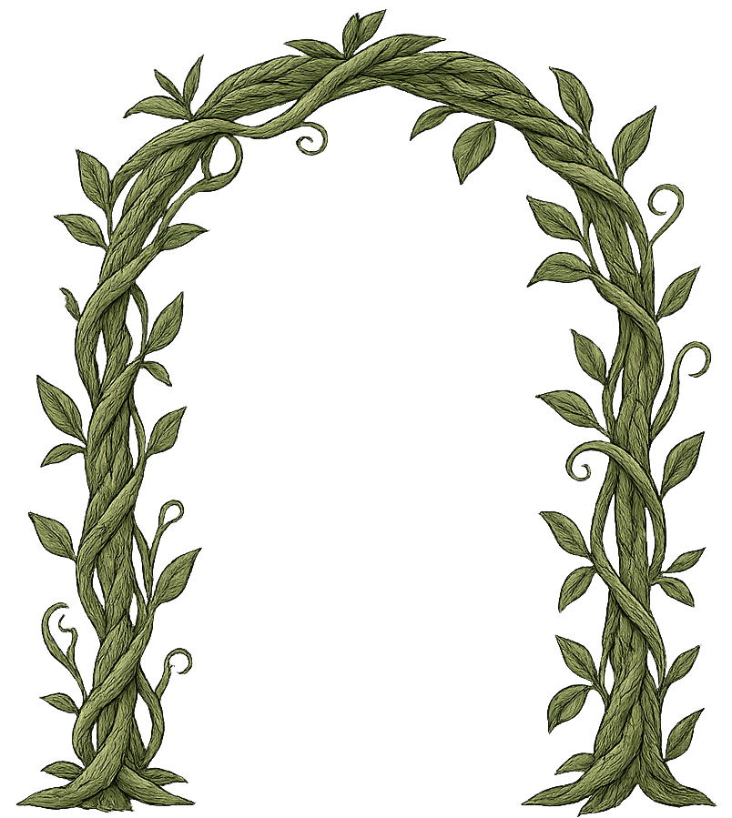

<ion-content [fullscreen]="true" class="center" scroll-y="false">
    <app-progress-bar></app-progress-bar>

  <div class="choose-question-wrapper">    
    <div class="section1">
      <div class="score" *ngIf="starScreen">
        <div class="text">Experince: {{currentExperience}}</div>
        <div class="text">TimeBonus: {{ currentTimeBonus}}</div>
        <div class="text">Total Score: {{currentTotal}}</div>
      </div>
      <div class="ethereal-bubble-wrapper"  *ngIf="!starScreen">
        <div *ngFor="let question of questions" [id]="question.id" class="ethereal-bubble" (cdkDragMoved)="onDragMoved($event, question.pts)" (cdkDragEnded)="onDragEnded($event, question)" #draggable cdkDrag>
          <span class="icon">💡</span>
          <span class="points text-dark"><strong>{{question.pts}}</strong></span>
        </div>
      </div>
    </div>
    <div class="section2">
      <div class="stars-wrapper">
        <div class="star" #star1></div>
        <div class="star" #star2></div>
        <div class="star" #star3></div>
      </div>
      <div class="pendant-wrapper" [class.dragging]="dragOver" id="target">
        
        <div class="pendant" #target></div>
        <div class="progress-container">
          <div class="progress" #progress></div>
        </div>
      </div>
    </div>
    <div class="section3">
      <button *ngIf="starScreen" [class.blue]="true" class="campaign-btn" type="button" (click)="backToStory2()" [disabled]="isClickedContinue">
        <div class="button-text fs1-3rem">Continue</div>
      </button>
      <button *ngIf="!starScreen" class="campaign-btn red" type="button" (click)="exitCampaign()">
        <div class="button-text fs1-3rem">Exit</div>
      </button>
    </div>
  </div>
  
</ion-content>